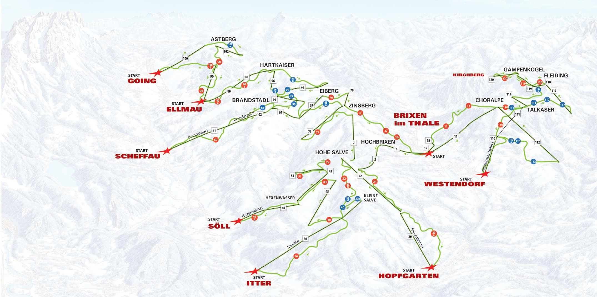
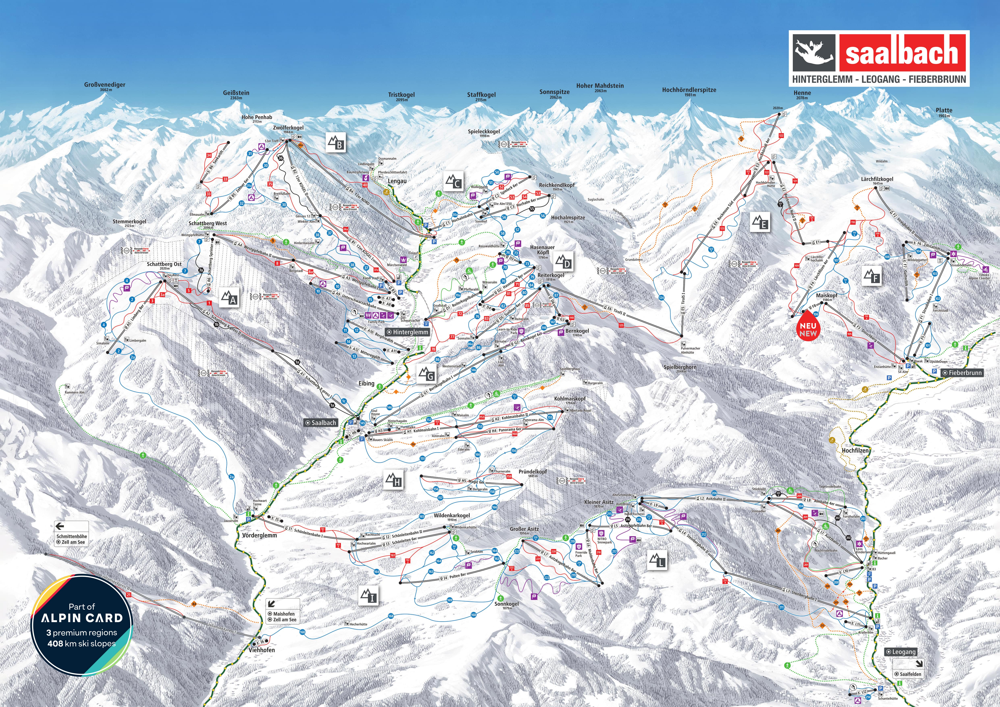
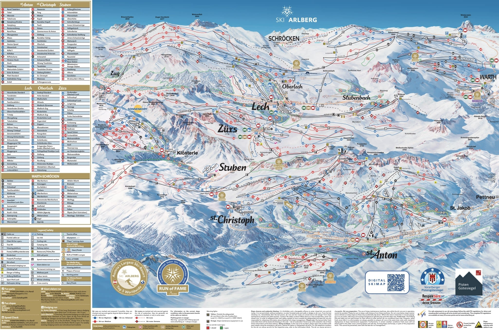

12/25 (五) 台北 → 慕尼黑（直飛約13hr）
傍晚抵達，前往市區入住
請假攻略：聖誕跨年黃金假期
2026年12/25（五）與2027年1/1（五）都是假日，中間只需請4天假即可享受10天連休。
機票分析
聖誕旺季機票比較。建議提早6個月以上預訂，並考慮不同城市進出（Open-jaw）節省交通時間。
精省轉機
~€1,060
酷航 Scoot
台北 TPE → 新加坡 SIN → 維也納 VIE
22-40 小時
- 最便宜的選擇
- 轉機時間長
- 廉航無免費餐飲與托運行李
- 需另購行李額（滑雪裝備重）
CP值最高
傳統航空轉機
~€1,160
中華航空 + 奧地利航空
台北 TPE → 曼谷 BKK → 維也納 VIE
17-28 小時
- 傳統航空服務品質
- 含免費餐飲與30kg行李
- 星空聯盟累積里程
- 需在曼谷轉機
直飛省時
~€1,260
長榮航空 EVA Air
台北 TPE → 維也納 VIE（直飛）
13-14 小時
- 直飛最省時
- 五星航空服務
- 價格較高
- 熱門日期易客滿
台灣出發省錢秘訣
Open-jaw 不同點進出
例如「慕尼黑進、布拉格出」，省下回程交通，票價僅貴5-15%。
例如「慕尼黑進、布拉格出」，省下回程交通，票價僅貴5-15%。
避開最貴日期
12/23-24出發最貴，建議12/20或12/25出發；回程避開12/31-1/1。
12/23-24出發最貴，建議12/20或12/25出發；回程避開12/31-1/1。
提早預訂
聖誕旺季建議提前6個月以上預訂，價格可便宜20-30%。
聖誕旺季建議提前6個月以上預訂，價格可便宜20-30%。
善用促銷
土航、阿聯酋轉機常有好價。長榮/華航也有歐洲航線促銷。
土航、阿聯酋轉機常有好價。長榮/華航也有歐洲航線促銷。
East Coast Direct
~€900
Austrian Airlines
New York JFK → Vienna VIE (Nonstop)
8h 10min
- Only nonstop US-Vienna route
- Short flight time
- Only from JFK
- Christmas peak prices surge
Best Value
East Coast via Hub
~€1,100
Lufthansa / Swiss / United
JFK/EWR → FRA/ZRH → VIE/MUC
10-14 hours
- Multiple daily options
- Open-jaw friendly
- Requires connection
West Coast
~€1,500
Lufthansa / United / Condor
LAX/SFO → FRA/MUC → VIE
13-16 hours
- Direct to Munich available
- Higher prices from West Coast
Tips for US Travelers
Open-jaw Tickets
Fly into Munich (MUC), out of Prague (PRG) or Budapest (BUD). Saves backtracking.
Fly into Munich (MUC), out of Prague (PRG) or Budapest (BUD). Saves backtracking.
East Coast Advantage
JFK/EWR have the cheapest and most direct options to Austria.
JFK/EWR have the cheapest and most direct options to Austria.
Book 3-6 Months Ahead
Christmas flights fill up fast. Set price alerts on Google Flights.
Christmas flights fill up fast. Set price alerts on Google Flights.
Budget Airlines
Icelandair (via Reykjavik) or Aer Lingus (via Dublin) for budget connections.
Icelandair (via Reykjavik) or Aer Lingus (via Dublin) for budget connections.
雪場比較：奧地利四大推薦
從CP值最高的家庭友善雪場到傳奇級專業滑雪勝地，以下四個雪場各有特色。價格為2025/2026旺季成人6日纜車票。
| 雪場 | 雪道總長 | 海拔 | 6日票 | 每km成本 | 適合 | CP值 |
|---|---|---|---|---|---|---|
| SkiWelt | 275 km | 620-1,957m | €372 | €1.35/km | 初中級/家庭 | |
| Saalbach | 270 km | 830-2,096m | €425 | €1.57/km | 中級/派對族 | |
| Sölden | 142 km | 1,350-3,340m | €432 | €3.04/km | 中高級/風景控 | |
| St. Anton | 305 km | 1,300-2,811m | €450 | €1.48/km | 中高級/專業 |
雪道難度分佈比較
奧地利採用三色分級系統：藍道 Blue（初級 Easy）、紅道 Red（中級 Intermediate）、黑道 Black（高級 Difficult）
關於「綠道」：奧地利不使用綠道分級。法國等國家有獨立的綠道（最初級），但在奧地利，初學者練習區（Übungswiese）通常不計入雪道總長度。奧地利的藍道已涵蓋初學者適合的緩坡，相當於法國系統中的綠道＋藍道。
SkiWelt 275 km
初中級天堂，藍紅道佔86%
Saalbach 270 km
最多藍道，初學者最友善
Sölden 146 km
黑道比例最高，挑戰性強
St. Anton 300 km
最大雪場，各級均衡＋豐富野雪
SkiWelt Wilder Kaiser - Brixental
CP值之王275km 雪道
90+座纜車
€372 /6日
奧地利最大的相連雪場之一，以超高CP值聞名。275公里雪道以藍線（42%）和紅線（44%）為主，非常適合初學者和家庭。涵蓋 Ellmau、Söll、Hopfgarten 等9個村莊。80%雪道有人造雪設備。
優點
- 全奧地利主要雪場中最便宜
- 面積廣大，5天滑不完
- 適合初中級與家庭旅遊
- 距慕尼黑僅1.5小時車程
缺點
- 海拔較低（最高1,957m），雪況受天氣影響
- 黑道僅39km（14%），高手不夠刺激
- Après-ski 氣氛較平淡
Saalbach-Hinterglemm (Skicircus)
中級天堂270km 雪道
70座纜車
€425 /6日
「奧地利最酷的滑雪馬戲團」，以現代化纜車和豐富藍道（52%）聞名。ALPIN CARD 可通用 Zell am See 和 Kitzsteinhorn 冰川。Après-ski 文化濃厚，年輕人最愛。90%雪道有人造雪設備。
優點
- 藍道最多（140km），初學者最友善
- 現代化高速纜車，排隊短
- Après-ski 氣氛極佳
- ALPIN CARD 可通用冰川
缺點
- 價格中高
- 黑道僅18km（7%），高手選擇少
- 聖誕旺季人潮多
Sölden
冰川壯景142km 雪道
31座纜車
€432 /6日
奧地利唯一擁有三座3,000m以上山峰的雪場。Rettenbach 和 Tiefenbach 雙冰川保證聖誕絕佳雪況。007電影拍攝地「ice Q」餐廳在山頂。黑道比例19%為四大雪場最高。
優點
- 雙冰川保證雪況，海拔達3,340m
- 007電影拍攝地，景觀壯麗
- 黑道比例最高（19%）
- 距因斯布魯克僅1小時
缺點
- 雪道僅142km，較短
- 每km成本最高
- 高海拔天氣多變
St. Anton am Arlberg
傳奇雪場305km 雪道
88座纜車
€450 /6日
Arlberg 是奧地利最大相連雪場，全球頂級滑雪勝地。以傳奇 Après-ski 文化（Mooservirt 酒吧）和豐富野雪路線聞名。305km雪道涵蓋 St. Anton、Lech、Zürs 等村莊，各級均衡分佈。
優點
- 奧地利最大相連雪場（305km）
- 傳奇 Après-ski 文化
- 47km黑道＋豐富野雪
- 各級雪道均衡，適合混合程度團體
缺點
- 全奧地利最貴
- 野雪區需經驗，純新手慎選
- 聖誕期間極度擁擠
雪場地圖 Piste Maps
點擊圖片可放大查看完整雪道地圖
SkiWelt Wilder Kaiser - Brixental

Saalbach-Hinterglemm (Skicircus)

Sölden

St. Anton am Arlberg

雪場位置地圖
滑雪學校：課程與費用
奧地利擁有世界頂級的滑雪教學體系。無論是第一次踏上雪板的初學者，還是想精進技術的進階滑雪者，都能找到合適的課程。
滑雪程度定義
綠道 Green / Anfänger
Beginner
第一次滑雪或僅有1-2次經驗。正在學習基本站姿、煞車（雪犁/Pizza）和緩坡轉彎。需要在魔毯或初學者纜車區域練習。
建議課程：團體初學者課程 3-5天
藍道 Blue / Leicht Fortgeschritten
Intermediate
能自信地以雪犁轉彎，正在學習平行轉彎（Parallel Turn）。可以在緩坡藍道上獨立滑行，但陡坡仍需雪犁輔助。
建議課程：團體中級課程 3天 或 私人課 2-3小時
紅道 Red / Fortgeschritten
Advanced
能在大多數雪道上平行轉彎。正在精進 Carving（刻滑）技術、速度控制和在較陡地形上的穩定性。可以應對中等難度的紅道。
建議課程：私人課 2-3小時 或 進階技術團體課
黑道 Black / Könner
Expert
能自信地在所有標記雪道上滑行。想挑戰野雪（Off-piste）、饅頭雪（Moguls）、陡坡和深雪。追求速度與風格的極致。
建議課程：Freeride 私人課 或 Off-piste 導覽
各雪場滑雪學校費用比較（成人）
| 課程類型 | SkiWelt | Saalbach | Sölden | St. Anton |
|---|---|---|---|---|
| 團體半天 2.5-3hr/天 |
~€90/天 | €95/天 | €90/天 | ~€110/天 |
| 團體半天 5日 最常見方案 |
~€290 | €315 | €290 | ~€360 |
| 團體全天 4-5hr/天 |
~€100/天 | - | €100/天 | ~€130/天 |
| 私人課 2hr | ~€190 | €204 | €150 | ~€250 |
| 私人課 半天 3-4hr |
~€280 | ~€300 | €240 | ~€380 |
| 初學者套裝 含租借+課程+初學纜車 |
~€428 5天課+7天租借 |
€395 4天課+4天租借+2天初學纜車 |
€459 5天課+6天租借 |
~€500 5天課+租借 |
選課建議
初學者首選：團體課 3-5天
團體課最划算，3天通常能學會基本轉彎。5天課程結束後可獨立滑藍道。建議搭配初學者套裝（含租借）最省。
團體課最划算，3天通常能學會基本轉彎。5天課程結束後可獨立滑藍道。建議搭配初學者套裝（含租借）最省。
中級進階：私人課 2-3小時
已會基本轉彎但想突破瓶頸？2-3小時私人課比5天團體課更有效率。3-4人分攤費用，每人僅€50-80。
已會基本轉彎但想突破瓶頸？2-3小時私人課比5天團體課更有效率。3-4人分攤費用，每人僅€50-80。
高手挑戰：Freeride 導覽
Sölden 和 St. Anton 提供 Freeride 私人課（5hr ~€330），由專業嚮導帶領探索野雪路線。需有黑道以上程度。
Sölden 和 St. Anton 提供 Freeride 私人課（5hr ~€330），由專業嚮導帶領探索野雪路線。需有黑道以上程度。
省錢秘訣
提前2-3個月線上預訂可享10-20%折扣。聖誕高峰期（12/25-1/1）價格上浮10-20%，建議避開12/25-27開課。私人課多人分攤最划算。
提前2-3個月線上預訂可享10-20%折扣。聖誕高峰期（12/25-1/1）價格上浮10-20%，建議避開12/25-27開課。私人課多人分攤最划算。
歐洲平價雪場：跳脫奧地利的選擇
奧地利雪場設施一流但價格較高。如果預算有限，歐洲還有許多CP值極高的滑雪勝地。以下比較涵蓋東歐、安道爾、斯洛維尼亞等地，從每日總花費（纜車＋住宿＋餐飲）來看，最便宜的選項只要奧地利的一半！
每日總花費比較（每人）
包含纜車票＋住宿＋三餐，以歐元估算
推薦平價雪場詳細比較
Bansko 班斯科
🇧🇬 保加利亞 България 最佳CP值雪道70 km
海拔990-2,560m
日票NT$1,960
租借/日NT$560
● 8藍
● 11紅
● 2黑
優點
食物超便宜（一餐€10）、啤酒€2、纜車直達市區、雪場設施現代化、有夜生活
食物超便宜（一餐€10）、啤酒€2、纜車直達市區、雪場設施現代化、有夜生活
缺點
海拔較低雪況不穩、專家級地形有限、纜車排隊長、離索菲亞機場2.5小時
海拔較低雪況不穩、專家級地形有限、纜車排隊長、離索菲亞機場2.5小時
✈ 索菲亞 SOF → 巴士2.5hr（€10）或包車（€80）
Jasná 亞斯納
🇸🇰 斯洛伐克 Slovensko 進階推薦雪道52 km
海拔943-2,024m
日票NT$2,275
6日票NT$10,850
● 藍道
● 紅道
● 黑道（認真的黑道）
優點
真正的高山滑雪（2000m峰頂）、黑道有挑戰性、人少不擁擠、啤酒€2.5
真正的高山滑雪（2000m峰頂）、黑道有挑戰性、人少不擁擠、啤酒€2.5
缺點
交通不便（需從布拉提斯拉瓦或克拉科夫轉車）、住宿選擇較少且較貴
交通不便（需從布拉提斯拉瓦或克拉科夫轉車）、住宿選擇較少且較貴
✈ 布拉提斯拉瓦 BTS 或克拉科夫 KRK → 火車+巴士 3-4hr
Grandvalira 格蘭瓦利拉
🇦🇩 安道爾 Andorra 最大雪場雪道210 km
海拔1,710-2,640m
日票NT$2,415
6日票NT$12,950
● 綠道（有！）
● 藍道
● 紅道
● 黑道
優點
210km超大雪場、免稅購物天堂、有綠道（法國系統）、現代纜車、雪況好
210km超大雪場、免稅購物天堂、有綠道（法國系統）、現代纜車、雪況好
缺點
無機場需從巴塞隆納/土魯斯轉車3hr、聖誕假期人潮多、物價比東歐高
無機場需從巴塞隆納/土魯斯轉車3hr、聖誕假期人潮多、物價比東歐高
✈ 巴塞隆納 BCN 或土魯斯 TLS → 巴士/包車 3hr
Borovets 博羅維茨
🇧🇬 保加利亞 България 初學者友善雪道58 km
海拔1,390-2,560m
日票NT$1,750
租借/日NT$560
● 寬闊藍道
● 紅道
● 少量黑道
優點
保加利亞最大最老雪場、含早晚餐飯店€64/晚、夜生活熱鬧、雪道寬適合初學
保加利亞最大最老雪場、含早晚餐飯店€64/晚、夜生活熱鬧、雪道寬適合初學
缺點
設施較老舊、專家地形有限、離索菲亞1.5hr
設施較老舊、專家地形有限、離索菲亞1.5hr
✈ 索菲亞 SOF → 巴士1.5hr
Zakopane 扎科帕內
🇵🇱 波蘭 Polska 纜車最便宜雪道~20 km
海拔850-1,987m
日票NT$1,400
啤酒NT$70
● 多個小雪場
● 紅道
● Kasprowy Wierch 黑道
優點
歐洲最便宜纜車票之一（€37-40）、克拉科夫2hr可達、波蘭美食便宜又好吃
歐洲最便宜纜車票之一（€37-40）、克拉科夫2hr可達、波蘭美食便宜又好吃
缺點
雪場分散且小、低海拔雪況不穩、Kasprowy Wierch 僅天然雪時開放
雪場分散且小、低海拔雪況不穩、Kasprowy Wierch 僅天然雪時開放
✈ 克拉科夫 KRK → 滑雪巴士 2hr（€7）
Poiana Brașov 波亞納布拉索夫
🇷🇴 羅馬尼亞 România 最美風景雪道25 km
海拔1,020-1,799m
日票NT$1,645
住宿/晚NT$1,925
● 藍道為主
● 紅道
● 夜間滑雪
優點
特蘭西瓦尼亞絕美風景、布拉索夫古城超值得逛、食物酒水超便宜、有夜間滑雪
特蘭西瓦尼亞絕美風景、布拉索夫古城超值得逛、食物酒水超便宜、有夜間滑雪
缺點
雪場小（25km）、纜車老舊、離布加勒斯特機場較遠
雪場小（25km）、纜車老舊、離布加勒斯特機場較遠
✈ 布加勒斯特 OTP → 火車到 Brașov（€8, 2.5hr）
Kranjska Gora 克拉尼斯卡戈拉
🇸🇮 斯洛維尼亞 Slovenija 近布萊德湖雪道20 km
海拔810-1,295m
日票NT$1,715
6日票NT$8,330
● 初中級
● 紅道
● 世界盃黑道
優點
朱利安阿爾卑斯山美景、世界盃賽道、1hr到盧比安納機場、布萊德湖近在咫尺
朱利安阿爾卑斯山美景、世界盃賽道、1hr到盧比安納機場、布萊德湖近在咫尺
缺點
雪場小（20km）、海拔低、住宿不算便宜（€100+/晚）
雪場小（20km）、海拔低、住宿不算便宜（€100+/晚）
✈ 盧比安納 LJU → 開車/巴士 1hr
Gudauri 古道里
🇬🇪 喬治亞 საქართველო 全歐最便宜雪道35 km
海拔1,993-3,276m
日票NT$805
租借/日NT$420
● 藍道
● 紅道
● 黑道＋野雪
優點
全歐洲最便宜（日票€23！）、高海拔雪況好（3,276m）、喬治亞美食超讚、啤酒€2
全歐洲最便宜（日票€23！）、高海拔雪況好（3,276m）、喬治亞美食超讚、啤酒€2
缺點
地理位置偏遠（高加索山脈）、基礎設施有限、從台灣/美國飛很遠
地理位置偏遠（高加索山脈）、基礎設施有限、從台灣/美國飛很遠
✈ 提比里斯 TBS → 開車/包車 2hr
綜合比較總表
| 雪場 | 國家 | 雪道 | 海拔最高 | 日票 | 住宿/晚 | 一餐 | 每日總花費 | vs 奧地利 |
|---|---|---|---|---|---|---|---|---|
| Gudauri | 🇬🇪 喬治亞 | 35km | 3,276m | NT$805 | NT$1,750 | NT$280 | NT$3,080 | 省52% |
| Borovets | 🇧🇬 保加利亞 | 58km | 2,560m | NT$1,750 | NT$1,575 | NT$350 | NT$3,850 | 省40% |
| Zakopane | 🇵🇱 波蘭 | ~20km | 1,987m | NT$1,400 | NT$1,925 | NT$420 | NT$3,850 | 省40% |
| Poiana Brașov | 🇷🇴 羅馬尼亞 | 25km | 1,799m | NT$1,645 | NT$1,925 | NT$350 | NT$4,095 | 省36% |
| Bansko | 🇧🇬 保加利亞 | 70km | 2,560m | NT$1,960 | NT$1,750 | NT$385 | NT$4,235 | 省34% |
| Vogel | 🇸🇮 斯洛維尼亞 | 22km | 1,800m | NT$1,575 | NT$2,625 | NT$700 | NT$5,075 | 省20% |
| Jasná | 🇸🇰 斯洛伐克 | 52km | 2,024m | NT$2,275 | NT$2,800 | NT$525 | NT$5,775 | 省9% |
| Grandvalira | 🇦🇩 安道爾 | 210km | 2,640m | NT$2,415 | NT$2,800 | NT$700 | NT$6,090 | 省4% |
| SkiWelt | 🇦🇹 奧地利 | 275km | 1,957m | NT$2,170 | NT$3,150 | NT$875 | NT$6,370 | 基準 |
| St. Anton | 🇦🇹 奧地利 | 305km | 2,811m | NT$2,625 | NT$4,200 | NT$1,050 | NT$8,050 | +26% |
結論：怎麼選？
預算最低 → Bansko 🇧🇬
70km雪道＋超便宜的食宿＋有纜車直達市區。CP值之王，5天滑雪含吃住只要奧地利的6成。適合初中級滑雪者和想省錢的團體。
雪場最大 → Grandvalira 🇦🇩
210km雪道接近奧地利水準，價格卻便宜一些。免稅購物是額外福利。適合想要大雪場體驗但預算有限的人。
進階挑戰 → Jasná 🇸🇰
真正的高山滑雪體驗，黑道有挑戰性。價格比奧地利便宜但差距不大。適合中高級滑雪者想嘗試不同風格。
結合旅遊 → Kranjska Gora 🇸🇮 或 Poiana Brașov 🇷🇴
雪場小但周邊旅遊資源豐富（布萊德湖、特蘭西瓦尼亞）。適合滑雪2-3天＋旅遊的混合行程。
北美平價雪場：美國＆加拿大的選擇
北美大型雪場（Vail、Whistler）日票動輒 US$200-300，但仍有許多高CP值的選擇。以下比較美國與加拿大的平價雪場，並與歐洲做跨洲對比。
歐洲 vs 北美：關鍵數據
NT$7,140
北美前10大雪場
平均日票
平均日票
NT$2,695
歐洲前10大雪場
平均日票
平均日票
~500
北美雪場數量
服務 3.3 億人
服務 3.3 億人
~4,000
歐洲雪場數量
服務 4.5 億人
服務 4.5 億人
每日總花費比較（每人）
包含纜車票＋住宿＋三餐
推薦北美平價雪場詳細比較
Brian Head 布萊恩黑德
🇺🇸 猶他州 Utah 最佳CP值雪道71 runs / 650 acres
海拔2,926-3,328m
日票NT$1,610
年降雪914cm
● 30%初級
● 35%中級
● 35%高級
優點
日票最低$29起、12歲以下免費、近Zion/Bryce國家公園、猶他粉雪品質佳、夜間滑雪
日票最低$29起、12歲以下免費、近Zion/Bryce國家公園、猶他粉雪品質佳、夜間滑雪
缺點
雪場規模較小、離鹽湖城3.5hr、住宿選擇有限、非大型度假村等級
雪場規模較小、離鹽湖城3.5hr、住宿選擇有限、非大型度假村等級
✈ 拉斯維加斯 LAS → 開車 3hr / 鹽湖城 SLC → 開車 3.5hr
Ski Cooper 滑雪庫柏
🇺🇸 科羅拉多州 Colorado 高海拔粉雪雪道64 runs / 480 acres
海拔3,200-3,566m
日票NT$1,575
年降雪660cm
● 18%初級
● 26%中級
● 32%高級
● 24%專家
優點
平日僅$49、科羅拉多最高海拔之一、100%天然雪、免費停車、不擁擠
平日僅$49、科羅拉多最高海拔之一、100%天然雪、免費停車、不擁擠
缺點
雪場小、離丹佛2.5hr、無夜間滑雪、設施較基本
雪場小、離丹佛2.5hr、無夜間滑雪、設施較基本
✈ 丹佛 DEN → 開車 2.5hr（I-70 → US-24）
Powder Mountain 粉雪山
🇺🇸 猶他州 Utah 北美最大雪道162 runs / 8,484 acres
海拔2,103-2,713m
日票NT$2,380
年降雪1,270cm
● 25%初級
● 40%中級
● 35%高級
優點
北美最大雪場（8,484英畝）、每日限售1,500張票、粉雪品質頂級、夜間滑雪
北美最大雪場（8,484英畝）、每日限售1,500張票、粉雪品質頂級、夜間滑雪
缺點
動態定價票價浮動、山路冬季較難開、住宿選擇少、纜車速度慢
動態定價票價浮動、山路冬季較難開、住宿選擇少、纜車速度慢
✈ 鹽湖城 SLC → 開車 1hr（55 miles）
Bridger Bowl 布里傑碗
🇺🇸 蒙大拿州 Montana 極限地形雪道75+ runs / 2,000 acres
海拔1,859-2,652m
日票NT$2,625
年降雪889cm
● 25%初級
● 35%中級
● 30%高級
● 10%極限
優點
非營利社區經營、The Ridge極限地形、350吋天然雪、線上購票省$15
非營利社區經營、The Ridge極限地形、350吋天然雪、線上購票省$15
缺點
纜車較老舊、離大城市遠、住宿需在Bozeman、無夜間滑雪
纜車較老舊、離大城市遠、住宿需在Bozeman、無夜間滑雪
✈ Bozeman BZN → 開車 30min（16 miles）
Mont-Sainte-Anne 聖安妮山
🇨🇦 魁北克省 Québec 加東首選雪道71 runs / 460 acres
海拔175-800m
日票NT$2,625
垂直落差625m
● 21%初級
● 27%中級
● 19%高級
● 33%專家
優點
近魁北克市（30min）、夜間滑雪、法語文化體驗、加東最大垂直落差之一
近魁北克市（30min）、夜間滑雪、法語文化體驗、加東最大垂直落差之一
缺點
海拔低雪質不穩、需人造雪、東岸天氣多變、英語不太通
海拔低雪質不穩、需人造雪、東岸天氣多變、英語不太通
✈ 魁北克市 YQB → 開車 30min / 蒙特婁 YUL → 開車 3.5hr
Red Mountain 紅山
🇨🇦 卑詩省 British Columbia 隱藏寶石雪道119 runs / 3,850 acres
海拔1,185-2,075m
日票NT$3,325
年降雪762cm
● 20%初級
● 35%中級
● 45%高級
優點
3,850英畝超大地形、119條雪道、Rossland小鎮氛圍佳、不擁擠
3,850英畝超大地形、119條雪道、Rossland小鎮氛圍佳、不擁擠
缺點
交通不便（離最近機場2hr+）、住宿有限、設施較基本
交通不便（離最近機場2hr+）、住宿有限、設施較基本
✈ 斯波坎 GEG → 開車 3.5hr / 卡加利 YYC → 開車 7hr
Season Pass 省錢密技
Epic Pass
NT$33,390
42個雪場無限滑（含Vail、Whistler、歐洲Verbier等）。滑5天以上即回本。
Ikon Pass
NT$32,760
50個雪場（含Jackson Hole、Banff、Chamonix等）。適合喜歡多元體驗的滑雪者。
Mountain Collective
NT$21,245
25個雪場各2天（含Banff、Revelstoke等）。適合旅行式滑雪。
跨洲比較總表
| 雪場 | 國家 | 雪道規模 | 日票 | 住宿/晚 | 每日總花費 | vs 奧地利 |
|---|---|---|---|---|---|---|
| Bansko | 🇧🇬 保加利亞 | 70km | NT$1,960 | NT$1,120 | NT$2,555 | 省60% |
| Zakopane | 🇵🇱 波蘭 | ~20km | NT$1,400 | NT$1,225 | NT$3,850 | 省40% |
| Brian Head | 🇺🇸 猶他 | 71 runs | NT$1,610 | NT$1,925 | NT$4,760 | 省25% |
| Ski Cooper | 🇺🇸 科羅拉多 | 64 runs | NT$1,575 | NT$1,925 | NT$5,390 | 省15% |
| Bridger Bowl | 🇺🇸 蒙大拿 | 75+ runs | NT$2,625 | NT$2,065 | NT$5,880 | 省8% |
| SkiWelt | 🇦🇹 奧地利 | 275km | NT$2,170 | NT$3,150 | NT$6,370 | 基準 |
| Powder Mtn | 🇺🇸 猶他 | 8,484 acres | NT$2,380 | NT$2,380 | NT$6,685 | +5% |
| Red Mountain | 🇨🇦 BC | 3,850 acres | NT$3,325 | NT$2,065 | NT$6,685 | +5% |
| Vail | 🇺🇸 科羅拉多 | 5,317 acres | NT$8,890 | NT$6,370 | NT$16,205 | +154% |
結論：北美 vs 歐洲怎麼選？
從台灣出發 → 歐洲更划算
台灣飛歐洲與飛北美的機票價差不大（約NT$35,000-45,000），但歐洲的雪場票價、住宿、餐飲全面便宜。東歐雪場更是只要北美的一半。
從美國出發 → 北美平價雪場值得考慮
省去跨洲機票，Brian Head、Ski Cooper 等平價雪場每日花費可控制在 US$150-180。搭配 Epic/Ikon Pass 更划算。
追求極致CP值 → 東歐（保加利亞/波蘭）
Bansko 每日總花費約 €73（NT$2,555），是北美平價雪場的一半、奧地利的 40%。食宿超便宜是最大優勢。
追求粉雪體驗 → 猶他/蒙大拿
Powder Mountain 年降雪 1,270cm、Bridger Bowl 350吋天然雪。北美西部的粉雪品質是歐洲難以匹敵的。
亞洲雪場：日本＆韓國的選擇
離台灣最近的粉雪天堂，飛行時間僅 2.5~4 小時
🌏 亞洲 vs 歐洲 vs 北美：關鍵數據
| 指標 | 🇯🇵 日本 | 🇰🇷 韓國 | 🇦🇹 奧地利 | 🇺🇸 北美 |
|---|---|---|---|---|
| 從台灣飛行時間 | 3~4 小時 | 2.5 小時 | 12~14 小時 | 14~18 小時 |
| 平均日票 | €45 | €55 | €62 | €95 |
| 每日總花費 | €130 | €115 | €182 | €250 |
| 雪質 | ⭐⭐⭐⭐⭐ 粉雪天堂 | ⭐⭐⭐ 人造+天然 | ⭐⭐⭐⭐ 阿爾卑斯乾雪 | ⭐⭐⭐⭐ 因地區而異 |
| 雪場規模 | 中型（50~130km） | 小型（18~29km） | 大型（144~305km） | 大型（因雪場而異） |
| Snowboard 友善度 | ⭐⭐⭐⭐⭐ | ⭐⭐⭐⭐ | ⭐⭐⭐⭐ | ⭐⭐⭐⭐⭐ |
| 適合藍紅道程度 | ⭐⭐⭐⭐⭐ | ⭐⭐⭐⭐ | ⭐⭐⭐⭐⭐ | ⭐⭐⭐⭐ |
| 語言友善度 | ⭐⭐⭐⭐ 英日文 | ⭐⭐⭐ 韓英文 | ⭐⭐⭐⭐ 德英文 | ⭐⭐⭐⭐⭐ 英文 |
🇯🇵 日本雪場 — 粉雪天堂
日本擁有世界頂級的粉雪（Japow），加上溫泉、美食、文化體驗，是台灣人滑雪的首選目的地。所有雪場都歡迎 Ski 和 Snowboard。
Niseko United
ニセコユナイテッド
粉雪聖地
位置北海道 Hokkaido
雪道30+ 條 / ~50km
落差994m
年降雪14~18m 🤯
日票
€72
7日票
€420
租借/日
€33
每日總花費
€180
🎿 Ski ✓
🏂 Snowboard ✓
Terrain Park ⭐⭐⭐⭐⭐
✅ 世界級粉雪、英語友善、Hanazono 頂級 Terrain Park、夜生活豐富
❌ 日本最貴、旺季擁擠、離東京遠（需飛札幌）
🎯 藍紅道適合度：⭐⭐⭐⭐ — 中級地形豐富，但部分區域偏陡
Hakuba Valley
白馬バレー
奧運聖地
位置長野 Nagano
雪道200+ 條 / ~130km
落差1,071m
年降雪10~12m
日票
€62
7日票
€419
租借/日
€33
每日總花費
€156
🎿 Ski ✓
🏂 Snowboard ✓
Terrain Park ⭐⭐⭐⭐⭐ (Hakuba47)
✅ 日本最大雪場、1998奧運場地、Hakuba47 頂級 Park、地形多樣
❌ 各雪場分散需搭巴士、週末擁擠、住宿偏貴
🎯 藍紅道適合度：⭐⭐⭐⭐⭐ — Goryu/Norikura 超適合中級，選擇多
Nozawa Onsen
野沢温泉
🏆 最佳CP值
位置長野 Nagano
雪道36 條 / ~50km
落差1,085m
年降雪10~13m
日票
€41
7日票
€246
租借/日
€33
每日總花費
€120
🎿 Ski ✓
🏂 Snowboard ✓
Terrain Park ⭐⭐⭐
✅ 傳統溫泉村、13座免費公共溫泉、CP值最高、文化體驗獨特
❌ 雪場較小、英語有限、山路陡峭
🎯 藍紅道適合度：⭐⭐⭐⭐⭐ — 初中級地形佔 70%，非常適合
Furano
富良野スキー場
家庭首選
位置北海道 Hokkaido
雪道28 條 / ~25km
落差964m
年降雪8~10m
日票
€39
7日票
€234
租借/日
€30
每日總花費
€108
🎿 Ski ✓
🏂 Snowboard ✓
Terrain Park ⭐⭐⭐
✅ 北海道最便宜、人少粉雪好、家庭友善、風景優美
❌ 雪場較小、夜生活少、交通不便
🎯 藍紅道適合度：⭐⭐⭐⭐⭐ — 80% 初中級地形，完美匹配
Myoko Kogen
妙高高原
隱藏寶石
位置新潟 Niigata
雪道~50 條 / ~45km
落差~900m
年降雪15m+ 🤯
日票
€37
租借/日
€30
每日總花費
€100
🎿 Ski ✓
🏂 Snowboard ✓
Terrain Park ⭐⭐⭐
✅ 日本降雪量最大、最便宜、人少、溫泉文化
❌ 知名度低、英語有限、各雪場分散
🎯 藍紅道適合度：⭐⭐⭐⭐ — 中級地形豐富，適合探索
🇰🇷 韓國雪場 — 最近最快
韓國是離台灣最近的滑雪目的地（飛行僅 2.5 小時），適合短天數的滑雪旅行。雪場規模較小但設施現代，所有雪場都歡迎 Snowboard。
Yongpyong Resort
용평리조트（龍平）
奧運場地
位置平昌 Pyeongchang
雪道28 條 / 29.1km
落差~750m
特色2018冬奧場地
日票
€66
半日票
€47
租借/日
€33
每日總花費
€128
🎿 Ski ✓
🏂 Snowboard ✓
Terrain Park ⭐⭐⭐
✅ 韓國最大、2018奧運場地、Rainbow Zone 進階地形佳、首爾交通方便
❌ 週末超擁擠、人造雪為主、雪道短
🎯 藍紅道適合度：⭐⭐⭐⭐ — Red/Silver Zone 適合中級
High1 Resort
하이원리조트
Ski-in/Ski-out
位置旌善 Jeongseon
雪道18 條 / ~18km
落差~600m
特色韓國最高海拔
全日票
€71
5小時票
€51
租借/日
€30
每日總花費
€117
🎿 Ski ✓
🏂 Snowboard ✓
Terrain Park ⭐⭐⭐
✅ Ski-in/Ski-out、人少安靜、中級地形多、彈性計時票
❌ 交通不便（需自駕）、周邊活動少、雪場小
🎯 藍紅道適合度：⭐⭐⭐⭐⭐ — 45% 中級地形，最適合你們
Phoenix Pyeongchang
피닉스 평창
均衡選擇
位置平昌 Pyeongchang
雪道21 條
特色度假村設施完善
日票
€62
租借/日
€28
每日總花費
€108
🎿 Ski ✓
🏂 Snowboard ✓
Terrain Park ⭐⭐⭐
✅ 設施完善、中級地形好、近 Yongpyong 可搭配
❌ 規模較小、進階地形有限
🎯 藍紅道適合度：⭐⭐⭐⭐ — 75% 初中級，適合
Vivaldi Park
비발디파크
離首爾最近
位置洪川 Hongcheon
雪道12 條
特色首爾 1.5hr 直達
日票
€55
租借/日
€25
每日總花費
€91
🎿 Ski ✓
🏂 Snowboard ✓
Terrain Park ⭐⭐
✅ 離首爾最近、最便宜、有水上樂園、初學者友善
❌ 非常擁擠、雪場小、進階地形少
🎯 藍紅道適合度：⭐⭐⭐ — 偏初級，紅道程度可能覺得不夠
🎓 亞洲滑雪學校費用比較（Ski & Snowboard）
| 課程類型 | 🇯🇵 日本 | 🇰🇷 韓國 | 🇦🇹 奧地利 |
|---|---|---|---|
| 團體課（2-3hr） | €42 | €35 | €65 |
| 私人課（半日） | €120 | €105 | €200 |
| 英語教練 | ✅ 主要雪場有 | ⚠️ 部分有 | ✅ 普遍 |
| 中文教練 | ⚠️ 少數 | ✅ 較多 | ❌ 極少 |
| Snowboard 課程 | ✅ 普遍 | ✅ 普遍 | ✅ 普遍 |
🗺️ 亞洲雪場位置地圖
🔴 日本雪場 | 🔵 韓國雪場 | ✈️ 台北出發地
🏆 亞洲雪場總結推薦
🥇
最適合你們（藍紅道 Ski & Snowboard）
Nozawa Onsen 或 Furano — CP值最高，初中級地形豐富，加上溫泉文化體驗
💰
預算最低
Vivaldi Park（韓國）— 每日 ~NT$3,200，但雪場小。日本選 Myoko 或 Furano
🏂
Snowboard 最佳
Hakuba（Hakuba47）或 Niseko（Hanazono）— 亞洲最頂級 Terrain Park
⏱️
最省時間（短假期）
韓國 Yongpyong — 台灣飛 2.5hr + 車程 2.5hr，週五晚出發週日回
❄️
最佳雪質
Niseko — 世界公認最佳粉雪，年降雪 14~18 公尺
🌏
vs 歐洲的選擇
亞洲雪場較小但便宜 30-50%、飛行時間省 10+ 小時。歐洲勝在雪場規模和城市旅遊結合
城市景點：中歐必訪城市
每座城市都有獨特的聖誕氛圍與文化體驗。以下包含各城市的當地名稱（鄉土名情）、必訪景點與聖誕市集資訊。
維也納
Wien奧地利 Österreich音樂之都，擁有華麗的哈布斯堡王朝宮殿、世界級歌劇院。咖啡館文化為UNESCO非物質文化遺產。
美泉宮Schloss Schönbrunn
哈布斯堡夏宮，UNESCO世界遺產。聖誕市集在宮前廣場舉行。
聖史蒂芬大教堂Stephansdom
維也納地標，哥德式建築傑作。登南塔俯瞰全城。
霍夫堡皇宮Hofburg
哈布斯堡冬宮，內有西西公主博物館。
納許市場Naschmarkt
維也納最大露天市場，各國美食寶庫。
聖誕市集
市政廳廣場 (Rathausplatz) 聖誕市集為全歐最大之一。美泉宮前也有市集至1月初。
薩爾茲堡
Salzburg奧地利 Österreich莫札特故鄉，《乃乃乃》電影取景地。舊城區為UNESCO世界遺產，前往各大雪場的中繼站。
薩爾茲堡要塞Festung Hohensalzburg
中歐保存最完好的城堡之一，搭纜車登頂俯瞰全城。
米拉貝爾宮Schloss Mirabell
巴洛克花園，《乃乃乃》「Do-Re-Mi」拍攝地。
莫札特出生地Mozarts Geburtshaus
蓋特萊德巷9號，莫札特1756年出生的黃色小樓。
聖誕市集
大教堂廣場 (Domplatz) 聖誕市集被譽為全奧地利最有氣氛。
布拉格
Praha捷克 Česko百塔之城，歐洲保存最完整的中世紀城市景觀。物價比西歐便宜40-50%。捷克克朗 (CZK) 為貨幣。
布拉格城堡Pražský hrad
世界最大古城堡群，含聖維特大教堂、黃金巷。
查理大橋Karlův most
1357年建造的哥德式石橋，30座巴洛克聖人雕像。清晨最美。
舊城廣場天文鐘Staroměstský orloj
1410年製造，每整點機械人偶表演必看。
聖誕市集
舊城廣場市集營業至1/6，歐洲營業最久之一。必嘗 Trdelník（煙囪捲）。
布達佩斯
Budapest匈牙利 Magyarország多瑙河明珠，以溫泉浴場聞名。滑雪後泡溫泉是絕佳享受。匈牙利福林 (HUF) 為貨幣。
國會大廈Országház
新哥德式建築，多瑙河畔最壯觀地標。夜間燈光倒映河面極壯觀。
漁人堡Halászbástya
新羅馬式觀景台，俯瞰多瑙河與國會大廈全景。
塞切尼溫泉浴場Széchenyi fürdő
歐洲最大溫泉浴場之一，冬天蒸氣繚繞非常夢幻。
聖誕市集
Vörösmarty 廣場市集最大，必嘗 Gulyás（燉牛肉）和 Forralt bor（熱紅酒）。
慕尼黑
München德國 Deutschland巴伐利亞首府，啤酒文化之都。歐洲重要航空樞紐，進入奧地利滑雪區的最佳門戶。
瑪利亞廣場Marienplatz
慕尼黑心臟，新市政廳鐘琴每天11點和12點演奏。
皇家啤酒屋Hofbräuhaus
1589年創立，必嘗巴伐利亞白香腸配白啤酒。
寧芬堡宮Schloss Nymphenburg
巴伐利亞王室夏宮，巴洛克建築與廣闊花園。
聖誕市集
瑪利亞廣場 Christkindlmarkt 是德國最古老聖誕市集之一。必嘗 Lebkuchen 和 Glühwein。
其他順路城市
布拉提斯拉瓦 Bratislava
斯洛伐克 Slovensko
距維也納僅60km，火車1小時。歐洲最便宜首都之一。布拉提斯拉瓦城堡 (Bratislavský hrad) 俯瞰多瑙河。藍色教堂 (Modrý kostolík) 必拍。可從維也納當日來回。
哈修塔特 Hallstatt
奧地利 Österreich
UNESCO世界遺產，「世界最美小鎮」。湖畔彩色木屋冬季更夢幻。鹽礦 (Salzwelten) 和天空步道 (Skywalk) 必訪。從薩爾茲堡約1.5小時。
因斯布魯克 Innsbruck
奧地利 Österreich
阿爾卑斯山城，黃金屋頂 (Goldenes Dachl) 為地標。北山纜車 (Nordkettenbahnen) 從市區直達2,300m。前往 St. Anton 或 Sölden 必經之地。
瓦杜茲 Vaduz
列支敦斯登 Liechtenstein
世界第六小國首都。瓦杜茲城堡 (Schloss Vaduz) 為國家象徵。從奧地利 Feldkirch 搭公車僅30分鐘，順路蒐集護照章。
聖誕跨年雪況分析
12月下旬～1月初各地區的歷史雪況、積雪深度與可靠度比較，幫助你選擇最不會「踩雷」的雪場。
🏔️ 聖誕期間雪況可靠度排行
⭐⭐⭐⭐⭐
極度可靠
Sölden 🇦🇹
冰川保證・3,340m St. Anton 🇦🇹
阿爾卑斯最大降雪
冰川保證・3,340m St. Anton 🇦🇹
阿爾卑斯最大降雪
12月底積雪 100-200cm，幾乎 100% 全面開放。Sölden 有冰川從10月即可滑雪，St. Anton 是奧地利降雪量最大的區域（年均 300-750cm）。
⭐⭐⭐⭐
非常可靠
Niseko 🇯🇵
世界級粉雪 Myoko 🇯🇵
年降雪15m+ Saalbach 🇦🇹
90%造雪覆蓋 Gudauri 🇬🇪
高海拔天然雪
世界級粉雪 Myoko 🇯🇵
年降雪15m+ Saalbach 🇦🇹
90%造雪覆蓋 Gudauri 🇬🇪
高海拔天然雪
12月底積雪 60-150cm。日本北海道通常聖誕前已有充足降雪，2024年 Hakuba 創下13年來最大12月降雪紀錄（278cm）。
⭐⭐⭐
大致可靠
SkiWelt 🇦🇹
較低海拔 Hakuba 🇯🇵
早季變數大 Bansko 🇧🇬
需靠造雪 韓國雪場 🇰🇷
人造雪為主
較低海拔 Hakuba 🇯🇵
早季變數大 Bansko 🇧🇬
需靠造雪 韓國雪場 🇰🇷
人造雪為主
12月底積雪 30-80cm。這些雪場可能部分開放，依賴造雪系統補充。暖冬年份可能遇到雪況不佳的情況。
⭐⭐
有風險
Zakopane 🇵🇱
Borovets 🇧🇬
北美部分雪場 🇺🇸
低海拔或氣候變遷影響較大的區域。2025-26 年北美洛磯山脈雪季歷史性偏差，聖誕期間雪況不穩定。
📊 各雪場聖誕期間雪況數據
| 雪場 | 國家 | 最高海拔 | 12月底平均積雪 (山頂) |
造雪覆蓋率 | 聖誕可靠度 | 最佳月份 |
|---|---|---|---|---|---|---|
| Sölden | 🇦🇹 奧地利 | 3,340m | 80-150cm | 70% + 冰川 | ⭐⭐⭐⭐⭐ | 11月-4月 |
| St. Anton | 🇦🇹 奧地利 | 2,811m | 100-200cm | 部分 | ⭐⭐⭐⭐⭐ | 1月-3月 |
| Saalbach | 🇦🇹 奧地利 | 2,096m | 60-100cm | 90% | ⭐⭐⭐⭐ | 1月-3月 |
| SkiWelt | 🇦🇹 奧地利 | 1,957m | 50-80cm | 90% | ⭐⭐⭐ | 1月-2月 |
| Niseko | 🇯🇵 日本 | 1,308m | 100-150cm | 不需要 | ⭐⭐⭐⭐ | 1月-2月 |
| Myoko | 🇯🇵 日本 | 1,500m | 100-150cm | 不需要 | ⭐⭐⭐⭐ | 1月-2月 |
| Hakuba | 🇯🇵 日本 | 1,831m | 50-100cm | 部分 | ⭐⭐⭐ | 1月 |
| Nozawa Onsen | 🇯🇵 日本 | 1,650m | 80-120cm | 不需要 | ⭐⭐⭐⭐ | 1月-2月 |
| Furano | 🇯🇵 日本 | 1,074m | 80-120cm | 部分 | ⭐⭐⭐⭐ | 1月-2月 |
| Yongpyong | 🇰🇷 韓國 | 1,450m | 7-10cm 天然 | 100% | ⭐⭐⭐ | 1月-2月 |
| High1 | 🇰🇷 韓國 | 1,345m | 10-15cm 天然 | 100% | ⭐⭐⭐ | 1月-2月 |
| Bansko | 🇧🇬 保加利亞 | 2,560m | 38cm 頂部 | 75% | ⭐⭐⭐ | 1月-3月 |
| Gudauri | 🇬🇪 喬治亞 | 3,279m | 60-100cm | 不需要 | ⭐⭐⭐⭐ | 1月-3月 |
| Jasná | 🇸🇰 斯洛伐克 | 2,024m | 40-60cm | 60% | ⭐⭐⭐ | 1月-2月 |
💡 聖誕滑雪的關鍵提醒
氣候變遷影響
近年來阿爾卑斯山低海拔地區（1,500m以下）的12月積雪量持續下降。選擇高海拔雪場（2,000m+）是降低風險的最佳策略。
造雪系統是保險
奧地利主要雪場的造雪覆蓋率達 90%，即使天然雪不足也能保證基本滑行。韓國雪場則100%依賴造雪，雪質較硬。
聖誕 vs 一月
幾乎所有雪場的最佳雪況都在1月。聖誕期間是「早季」，如果雪況是首要考量，建議行程安排跨到1月初。
日本粉雪優勢
日本北海道的降雪量全球頂級（年均14-18m），且雪質為極輕的乾粉雪（Japow）。即使12月下旬，Niseko 和 Myoko 通常已有充足積雪。
2025-26 北美警訊
2025-26 年北美洛磯山脈經歷了歷史性的低雪量，多數雪場積雪遠低於平均。選擇北美雪場需承擔更高的不確定性。
最安全的選擇
聖誕滑雪最安全的選擇：Sölden（冰川）或 St. Anton（大降雪）。追求CP值：Nozawa Onsen 或 Furano（日本粉雪＋便宜）。
行程方案
根據不同假期長度與預算，提供三種行程方案。所有方案以「不走回頭路」為原則，搭配 Open-jaw 機票最划算。
方案A：經典三國滑雪之旅
慕尼黑 MUC 進 → 布拉格 PRG 出
D1
D2
12/26 (六) 慕尼黑一日遊
瑪利亞廣場、皇家啤酒屋。下午搭火車前往薩爾茲堡（1.5hr）
瑪利亞廣場、皇家啤酒屋。下午搭火車前往薩爾茲堡（1.5hr）
D3
12/27 (日) 薩爾茲堡半日 → 前往雪場
上午遊覽要塞與舊城，下午搭巴士前往雪場（1-1.5hr）
上午遊覽要塞與舊城，下午搭巴士前往雪場（1-1.5hr）
D4
12/28 (一) 滑雪 Day 1
D5
12/29 (二) 滑雪 Day 2
D6
12/30 (三) 滑雪 Day 3
D7
12/31 (四) 滑雪 Day 4 + 跨年派對
D8
1/1 (五) 滑雪 Day 5
下午搭車前往維也納（2.5-3hr）
下午搭車前往維也納（2.5-3hr）
D9
1/2 (六) 維也納 → 布拉格（火車4hr）
上午快速遊覽維也納，下午搭火車前往布拉格
上午快速遊覽維也納，下午搭火車前往布拉格
D10
1/3 (日) 布拉格半日 → 飛回台北
方案B：深度五國探索之旅
慕尼黑 MUC 進 → 布拉格 PRG 出
D1
12/19 (六) 台北 → 慕尼黑（提早出發，機票較便宜）
D2
12/20 (日) 慕尼黑一日遊＋聖誕市集
D3
12/21 (一) 慕尼黑 → 薩爾茲堡 → 雪場
D4-8
12/22-26 滑雪5天（含白色聖誕）
D9
12/27 (日) 雪場 → 維也納（2.5-3hr）
D10
12/28 (一) 維也納一日遊
D11
12/29 (二) 維也納 → 布達佩斯（火車2.5hr）
D12
12/30 (三) 布達佩斯一日遊
D13
12/31 (四) 布達佩斯跨年（多瑙河畔煙火）
D14
1/1 (五) 布達佩斯 → 布拉提斯拉瓦半日遊
D15
1/2 (六) 布拉提斯拉瓦 → 布拉格（4hr）
D16
1/3 (日) 布拉格半日 → 飛回台北
方案C：精省雙城滑雪之旅
維也納 VIE 進出（來回票最便宜）
D1
12/26 (六) 台北 → 維也納（12/25晚班機出發）
D2
12/27 (日) 維也納半日 → 前往雪場
D3
12/28 (一) 滑雪 Day 1
D4
12/29 (二) 滑雪 Day 2
D5
12/30 (三) 滑雪 Day 3
D6
12/31 (四) 滑雪 Day 4 + 跨年
D7
1/1 (五) 滑雪 Day 5 → 回維也納
D8
1/2 (六) 維也納 → 台北
互動地圖
藍色標記為城市，白色標記為雪場。點擊查看詳細資訊。
城市間交通時間與費用
| 路線 | 交通方式 | 時間 | 費用 |
|---|---|---|---|
| 維也納 → 薩爾茲堡 | ÖBB 火車 | 2.5 hr | €24-36 |
| 薩爾茲堡 → 因斯布魯克 | ÖBB 火車 | 2 hr | €20-30 |
| 維也納 → 布達佩斯 | RegioJet | 2.5-3 hr | €11-20 |
| 維也納 → 布拉提斯拉瓦 | 火車/渡船 | 1 hr | €10-15 |
| 維也納 → 布拉格 | RegioJet | 4-4.5 hr | €15-30 |
| 維也納 → 慕尼黑 | DB/ÖBB 火車 | 4-4.5 hr | €24-40 |
| 慕尼黑 → 因斯布魯克 | DB 火車 | 2 hr | €15-25 |
| 薩爾茲堡 → 雪場 | 巴士/火車 | 1-1.5 hr | €13-25 |
預算估算
一人預估費用（以歐元為基準，可用上方貨幣切換鈕轉換）。
精省型（方案C / 8天）
€2,100 ~ €2,700
| 機票（轉機） | ~€1,060 |
| 纜車票 5天 SkiWelt | €372 |
| 住宿 7晚（混合型） | €350-500 |
| 交通（火車/巴士） | €50-90 |
| 餐飲 | €170-250 |
| 雪具租借 5天 | €120-180 |
| 門票/其他 | €50-90 |
推薦
標準型（方案A / 10天）
€2,700 ~ €3,600
| 機票（Open-jaw 轉機） | ~€1,200 |
| 纜車票 5天 Saalbach | €425 |
| 住宿 9晚（混合型） | €500-700 |
| 交通（火車/巴士） | €100-160 |
| 餐飲 | €260-380 |
| 雪具租借 5天 | €120-180 |
| 門票/其他 | €80-140 |
豪華型（方案B / 16天）
€4,000 ~ €5,400
| 機票（Open-jaw 直飛） | ~€1,400 |
| 纜車票 5天 St. Anton | €450 |
| 住宿 15晚（中等） | €900-1,200 |
| 交通（火車/巴士） | €200-280 |
| 餐飲 | €440-620 |
| 雪具租借 5天 | €120-180 |
| 門票/其他 | €140-220 |
省錢小撇步
住宿：雪場選公寓式住宿（Ferienwohnung）可自炊，比飯店便宜40-50%。城市選青旅或Airbnb。
餐飲：超市自煮最省。奧地利 SPAR、BILLA 食材豐富。布達佩斯和布拉格餐廳僅奧地利一半價。
交通：提早預訂 ÖBB 和 RegioJet 的 Sparschiene 優惠票，最低€9.90起。
雪具：在雪場當地租借比帶過去方便。提前網路預訂通常有10-20%折扣。